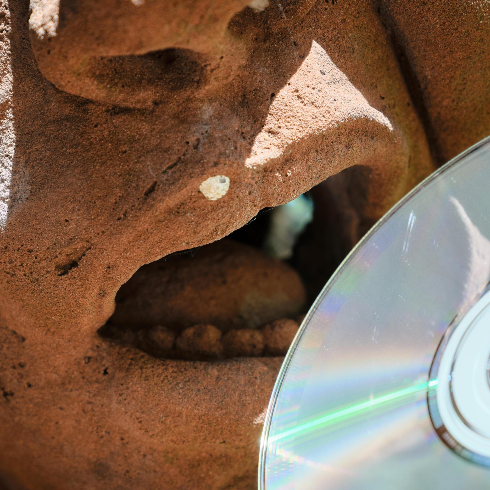

ATCS - At the Chips Store
Sleeping in my guitar
Iho
Eclair Haze
At the Chips Store
Gravel Brother
Dressed up for McDonalds
Call Right Back
Johnston's Revenge
Terror of Don
Billy Fog
When a Person
Ball and Shame
Christmas Grease
A cup of coffee on the cover
Bill Bean
Love Cabbage
Slippery Horse
Georgio Nanny Furnacé
Don's Delight
Skin of the game
Big Pittance
Glenn to Glenn
Picking up where we left Geoff
Spoken Yogurt
A balony life
Diamond in the buff
Malten Man
Kirkland Brie
Little man dance
